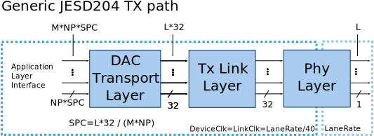
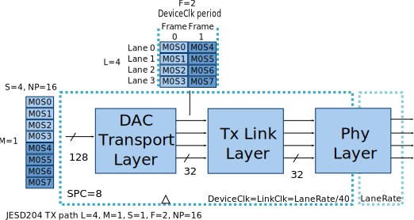
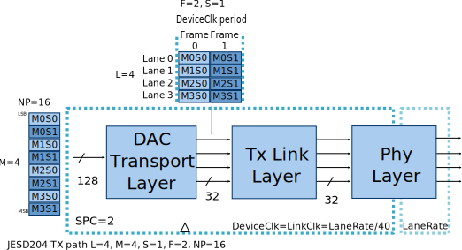
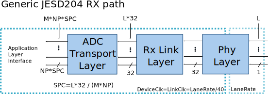
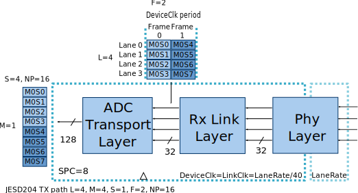
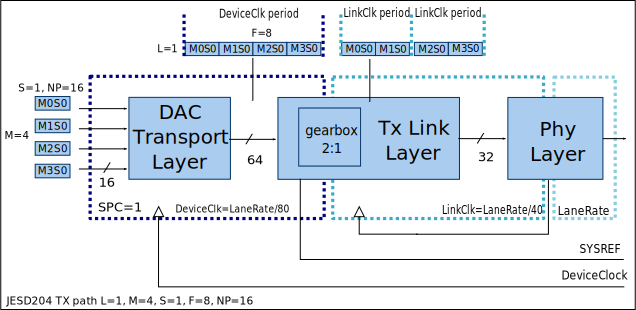
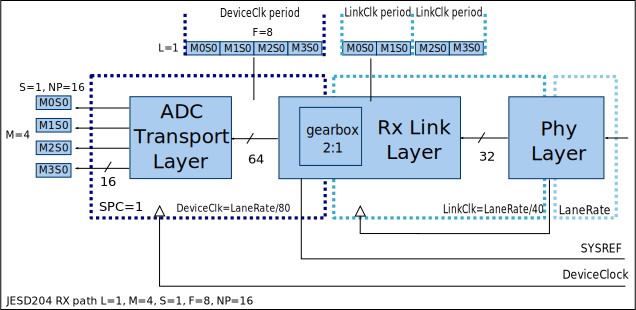

Generic JESD204 block designs
Using the generic building blocks from the ADI IP library, together with the JESD framework, parametrizable block designs can be built to interface ADI ADCs and DACs in various JESD modes.
Link parameters
Parameter |
Description |
|---|---|
L |
Number of lanes |
M |
Number of converters |
F |
Octets per Frame per Lane |
S |
Samples per Converter per Frame |
NP/N’ |
Total number of Bits per Sample |
N |
Converter Resolution |
K |
Frames per Multiframe |
HD |
High Density User Data Format |
E |
Number of multiblocks in an extended multiblock |
Important
In JESD links, the following equations must hold:
M * S * NP = L * F * 8
or
M / L = (F / S) * (8 / NP)
Changing the link parameters
Usually, projects are built and configured to exercise the ADC/DAC devices at maximum capability using all available lanes — this corresponds to a single JESD operation mode.
To switch to other modes, the generic block designs can be reconfigured by changing its parameters. These parameters map to the JESD link parameters. See the example below taken from this block design:
# TX parameters
set TX_NUM_OF_LANES 4 ; # L
set TX_NUM_OF_CONVERTERS 4 ; # M
set TX_SAMPLES_PER_FRAME 1 ; # S
set TX_SAMPLE_WIDTH 16 ; # N/NP
set TX_SAMPLES_PER_CHANNEL 2 ; # L * 32 / (M * N)
Caution
Changing the parameters “number of lanes” requires updating the top-level file and the constraints file as well! If the number of lanes is reduced, both files must be updated to remove references to the unused lanes.
Generic TX path
The following diagram presents a generic JESD TX path from the Application Layer to the FPGA boundary. The application layer is connected to the TX path through the DAC Transport Layer, which for each converter it accepts a data beat on every cycle. The width of data beat is defined by the SPC and NP parameter.
SPC represents the number of samples per converter per data clock cycle. SPC must be a natural number (greater than one and a whole number).
{kind=link}
On each clock cycle, the Link layer accepts 32 bits per every lane as a constraint from the physical layer that is configured to 32-bit mode. This means that for each clock cycle, the application layer must provide enough samples for each converter such that the Transport Layer can fill 32 bits of data for each lane.
Due to this constraint, the following equation must hold:
L * 32 = M * NP * SPC
In such designs, the following constraints apply to the Transport Layer:
F = {1, 2, 4}
NP = {8, 16}
Important
Some general rules that always should hold:
LaneRate = SampleRate * (10/8) * (M/L) * NP
SampleRate = DAC_rate/Total_interpolation
Link Clock = Lane Rate / 40
If OUTDIV_CLK is used: Link Clock = (RefClock)/((OutClkSel == 4)? 2 : (OutClkSel == 3)? 1 : 1)
Where:
M- “adi,converters-per-device”, device tree property from “axi-jesd204-tx” nodeL- number of lanes per link, parameter of JESD IPNP- “adi,bits-per-sample” device tree property from “axi-jesd204-tx” nodeRefClock- reference clock for the transceiversSampleRate- rate of the samples that feeds the JESD linkDAC_rate- DAC raw sample rate after interpolationTotal_interpolation- product of selected interpolations on the datapath, e.g:DAC_interpolation * Channel_interpolationOutClkSel- “adi,out-clk-select” device tree property from XCVR node
More information on the DAC Transport Layer can be found in DAC JESD204B/C Transport Peripheral page.
The Link layer consists of L number of lanes which form the link. More information on the TX Link layer can be found in JESD204B/C Link Transmit Peripheral page.
Example 1: TX link with L=4, M=1, S=1, F=2, NP=16
In this mode, the Transport Layer will output 2 frames in every clock cycle (32 bits / (F*8) = 2). The Application Layer must provide 8 samples each cycle to be able to fill the 2 frames.
SPC = (L*32) / (M*NP) = (4*32) / (1*16) = 128/16 = 8
{kind=link}
Example 2: TX link with L=4, M=4, S=1, F=2, NP=16
In this mode the Transport Layer will output two frames in every clock cycle. 32 bits / (F*8) = 2. The Application Layer must provide 8 samples each cycle to be able to fill the 2 frames.
SPC = (L*32) / (M*NP) = (4*32) / (4*16) = 128/64 = 2
{kind=link}
Generic RX path
The following diagram presents a generic JESD RX path from the Application Layer to the FPGA boundary. The Application Layer is connected to the RX path through the ADC Transport Layer, which for each converter generates a data beat on every cycle. The width of data beat is defined by the SPC and NP parameter. SPC represents the number of samples per converter per data clock cycle. SPC must be a natural number (greater than one and a whole number).
{kind=link}
On each clock cycle, the Link layer generates 32 bits per every lane as it is constrained from the Physical Layer that is configured to 32-bit mode. This means that for each clock cycle, the Application Layer must accept enough samples for each converter so the Transport Layer use 32 bits of data from each lane.
In such designs, the following constraints apply to the Transport Layer:
F = {1, 2, 4}
NP = {8, 16}
More information on the ADC Transport layer can be found in ADC JESD204B/C Transport Peripheral page.
The Link layer consists from L number of lanes which form the link. More information on the RX Link layer can be found in JESD204B/C Link Receive Peripheral page.
Example: RX link with L=4, M=1, S=1, F=2, NP=16
In this mode the Transport Layer will accept two frames in every clock cycle. 32 bits / (F*8) = 2; The Application Layer must accept 8 samples each cycle so the transport layer can deframe the 2 frames.
SPC = (L*32) / (M*NP) = (4*32) / (1*16) = 128/16 = 8
{kind=link}
Note
Such a parametrizable block design was built for the ADRV9009 prototyping platform and can be found here.
JESD204 modes with F=8
In a period of LinkClk, the Link layer always handles 32 bits per lane. The Transport Layer running at a same clock rate can fill the 32 bits with frames of 1,2 or 4 bytes.
However, for a link with L=1, M=4, NP=16 the minimum number of bytes per frame that must be supported is 8 (F=8).
Example: TX link with L=1, M=4, S=1, F=8, NP=16
To fulfill the requirement that in every DataClk period for each converter from the Application Layer a sample must be accepted (64 bits in this case), DataClk must be run with half the speed of the LinkClk.
{kind=link}
The rate adaptation and synchronization is done with a gearbox which receives its clocks from a PLL that ensures its output clocks are in phase.
Example: RX link with L=1, M=4, S=1, F=8, NP=16
The RX path is similar to the TX. In order the transport layer to produce a sample per converter in every clock cycle the Data clock must be ran at half of the LinkClock speed.
{kind=link}
Such a parametrizable block design that supports also F=8 was built for the ADRV9009 prototyping platform, and can be found here.